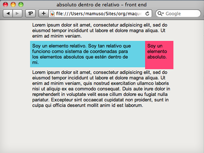

absoluto dentro de relativo
En el siguiente ejemplo vamos a poner un elemento absoluto dentro de un elemento relativo.
La esquina superior izquierda del elemento relativo funciona como origen de coordenadas para posicionar todos los elementos absolutos que tenga en su interior.
El elemento absoluto tiene esta vez el top y el right a 0, pero esas posiciones se toman en función del elemento relativo.